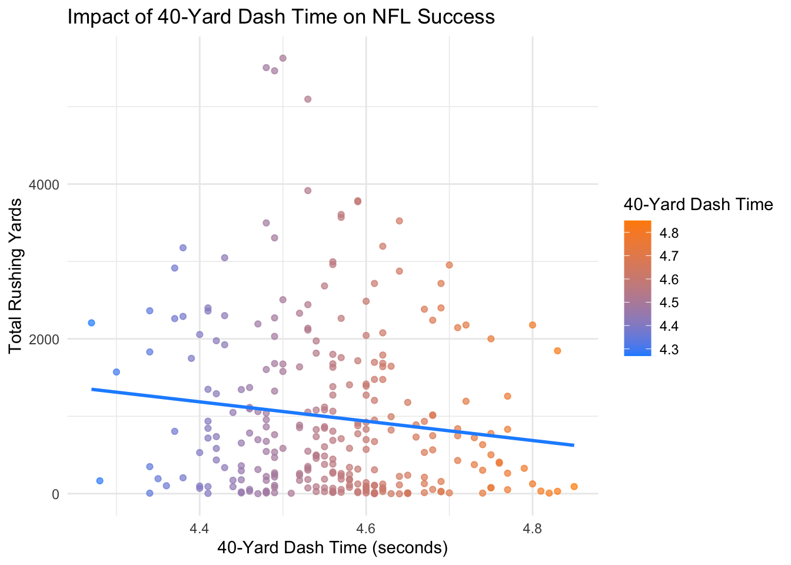
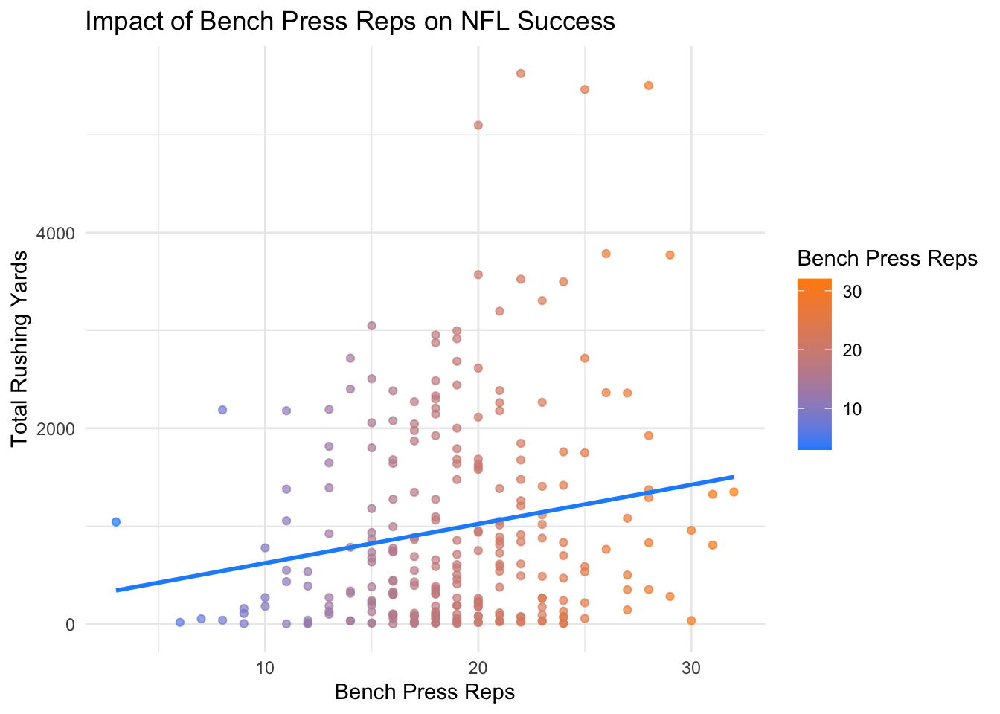
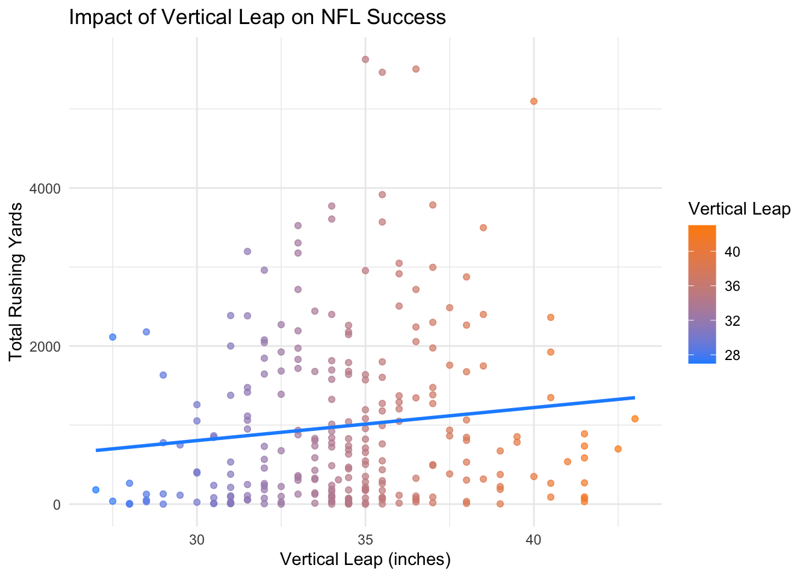
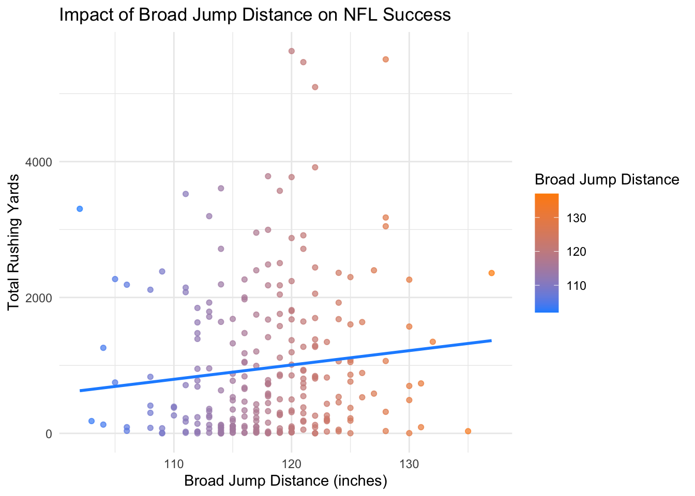
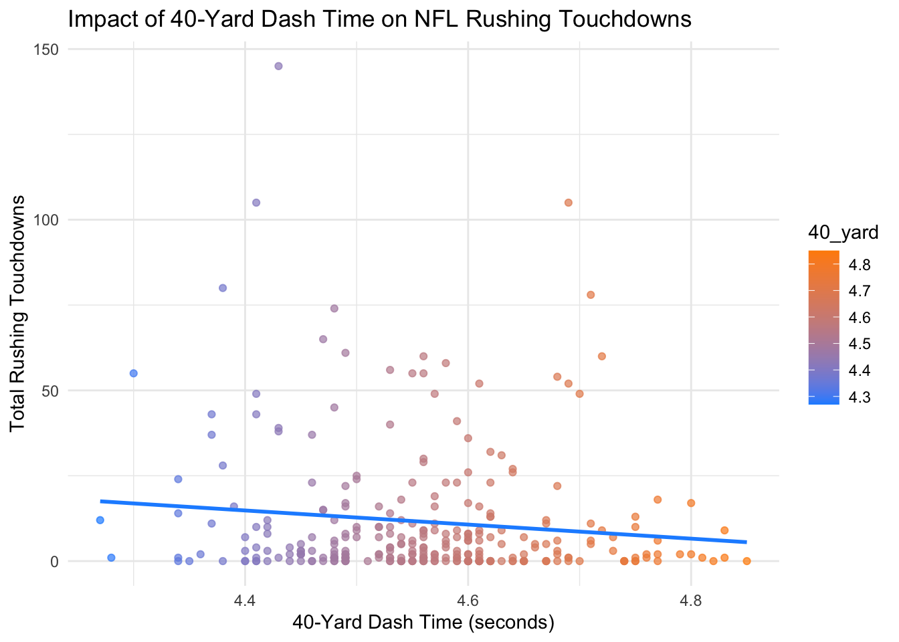
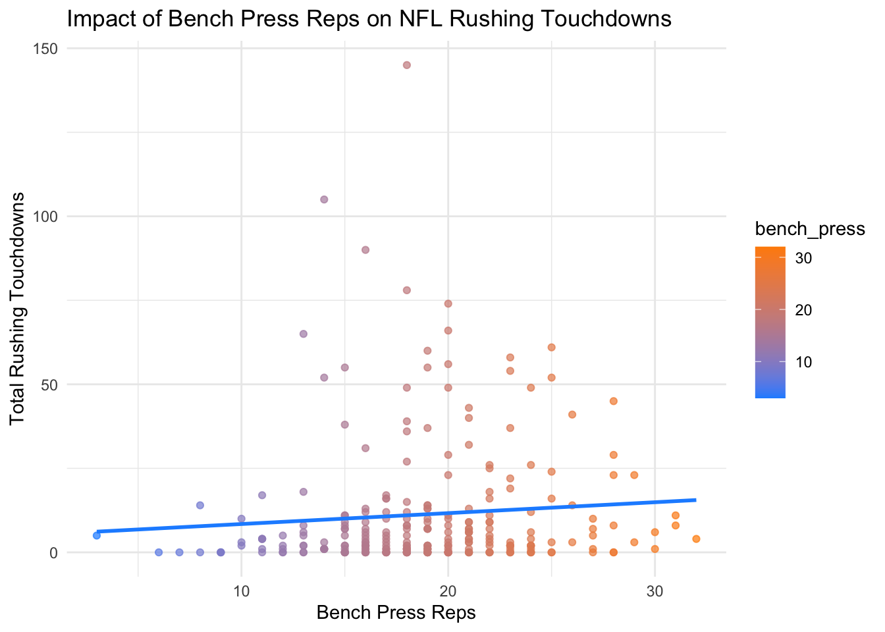
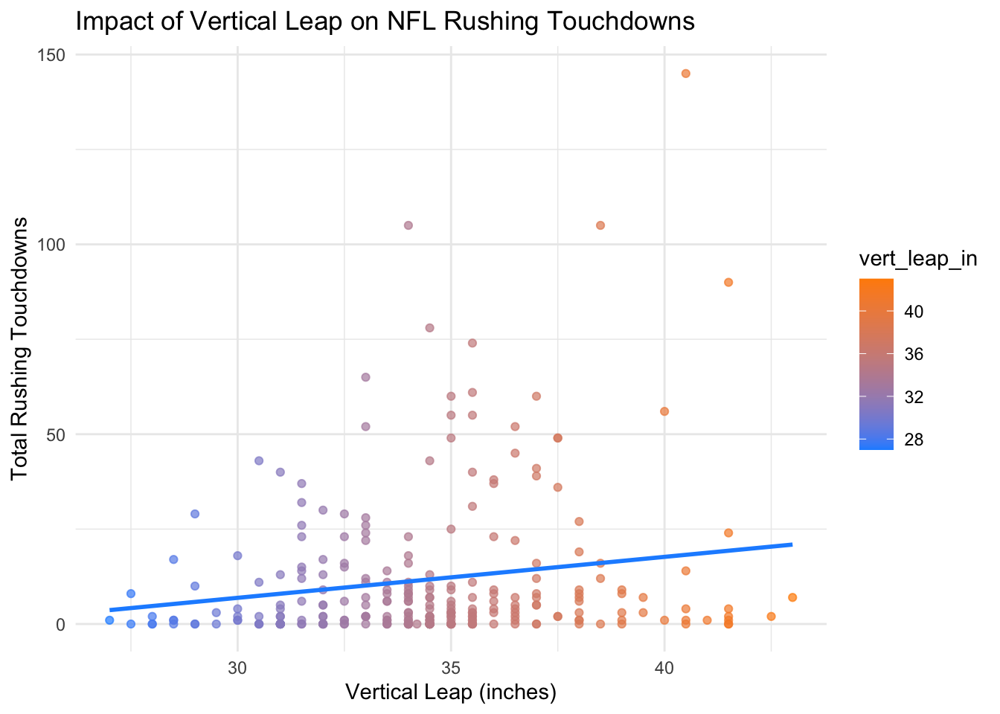
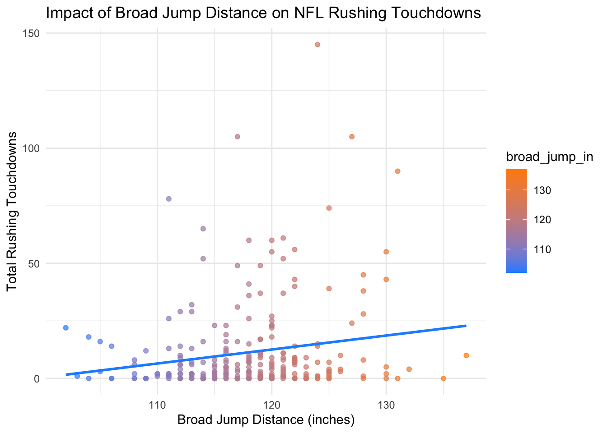
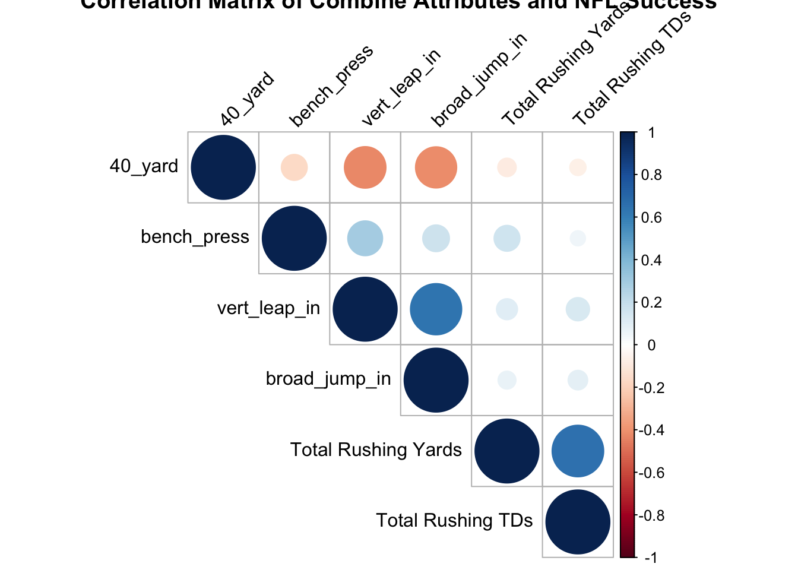

<!DOCTYPE html>
<html xmlns="http://www.w3.org/1999/xhtml" lang="en" xml:lang="en"><head>

<meta charset="utf-8">
<meta name="generator" content="quarto-1.3.450">

<meta name="viewport" content="width=device-width, initial-scale=1.0, user-scalable=yes">


<title>DSAC RB Analysis</title>
<style>
code{white-space: pre-wrap;}
span.smallcaps{font-variant: small-caps;}
div.columns{display: flex; gap: min(4vw, 1.5em);}
div.column{flex: auto; overflow-x: auto;}
div.hanging-indent{margin-left: 1.5em; text-indent: -1.5em;}
ul.task-list{list-style: none;}
ul.task-list li input[type="checkbox"] {
  width: 0.8em;
  margin: 0 0.8em 0.2em -1em; /* quarto-specific, see https://github.com/quarto-dev/quarto-cli/issues/4556 */ 
  vertical-align: middle;
}
/* CSS for syntax highlighting */
pre > code.sourceCode { white-space: pre; position: relative; }
pre > code.sourceCode > span { display: inline-block; line-height: 1.25; }
pre > code.sourceCode > span:empty { height: 1.2em; }
.sourceCode { overflow: visible; }
code.sourceCode > span { color: inherit; text-decoration: inherit; }
div.sourceCode { margin: 1em 0; }
pre.sourceCode { margin: 0; }
@media screen {
div.sourceCode { overflow: auto; }
}
@media print {
pre > code.sourceCode { white-space: pre-wrap; }
pre > code.sourceCode > span { text-indent: -5em; padding-left: 5em; }
}
pre.numberSource code
  { counter-reset: source-line 0; }
pre.numberSource code > span
  { position: relative; left: -4em; counter-increment: source-line; }
pre.numberSource code > span > a:first-child::before
  { content: counter(source-line);
    position: relative; left: -1em; text-align: right; vertical-align: baseline;
    border: none; display: inline-block;
    -webkit-touch-callout: none; -webkit-user-select: none;
    -khtml-user-select: none; -moz-user-select: none;
    -ms-user-select: none; user-select: none;
    padding: 0 4px; width: 4em;
  }
pre.numberSource { margin-left: 3em;  padding-left: 4px; }
div.sourceCode
  {   }
@media screen {
pre > code.sourceCode > span > a:first-child::before { text-decoration: underline; }
}
</style>


<script src="RBAnalysis_files/libs/clipboard/clipboard.min.js"></script>
<script src="RBAnalysis_files/libs/quarto-html/quarto.js"></script>
<script src="RBAnalysis_files/libs/quarto-html/popper.min.js"></script>
<script src="RBAnalysis_files/libs/quarto-html/tippy.umd.min.js"></script>
<script src="RBAnalysis_files/libs/quarto-html/anchor.min.js"></script>
<link href="RBAnalysis_files/libs/quarto-html/tippy.css" rel="stylesheet">
<link href="RBAnalysis_files/libs/quarto-html/quarto-syntax-highlighting.css" rel="stylesheet" id="quarto-text-highlighting-styles">
<script src="RBAnalysis_files/libs/bootstrap/bootstrap.min.js"></script>
<link href="RBAnalysis_files/libs/bootstrap/bootstrap-icons.css" rel="stylesheet">
<link href="RBAnalysis_files/libs/bootstrap/bootstrap.min.css" rel="stylesheet" id="quarto-bootstrap" data-mode="light">


</head>

<body class="fullcontent">

<div id="quarto-content" class="page-columns page-rows-contents page-layout-article">

<main class="content" id="quarto-document-content">

<header id="title-block-header" class="quarto-title-block default">
<div class="quarto-title">
<h1 class="title">DSAC RB Analysis</h1>
</div>


<div class="quarto-title-meta">

    
  
    
  </div>
  

</header>

<div class="cell">
<div class="sourceCode cell-code" id="cb1"><pre class="sourceCode r code-with-copy"><code class="sourceCode r"><span id="cb1-1"><a href="#cb1-1" aria-hidden="true" tabindex="-1"></a><span class="co"># Load necessary libraries</span></span>
<span id="cb1-2"><a href="#cb1-2" aria-hidden="true" tabindex="-1"></a><span class="fu">library</span>(tidyverse)</span></code><button title="Copy to Clipboard" class="code-copy-button"><i class="bi"></i></button></pre></div>
<div class="cell-output cell-output-stderr">
<pre><code>Warning: package 'ggplot2' was built under R version 4.2.3</code></pre>
</div>
<div class="cell-output cell-output-stderr">
<pre><code>── Attaching core tidyverse packages ──────────────────────── tidyverse 2.0.0 ──
✔ dplyr     1.1.0     ✔ readr     2.1.4
✔ forcats   1.0.0     ✔ stringr   1.5.0
✔ ggplot2   3.5.0     ✔ tibble    3.1.8
✔ lubridate 1.9.2     ✔ tidyr     1.3.0
✔ purrr     1.0.1     
── Conflicts ────────────────────────────────────────── tidyverse_conflicts() ──
✖ dplyr::filter() masks stats::filter()
✖ dplyr::lag()    masks stats::lag()
ℹ Use the ]8;;http://conflicted.r-lib.org/conflicted package]8;; to force all conflicts to become errors</code></pre>
</div>
<div class="sourceCode cell-code" id="cb4"><pre class="sourceCode r code-with-copy"><code class="sourceCode r"><span id="cb4-1"><a href="#cb4-1" aria-hidden="true" tabindex="-1"></a><span class="fu">library</span>(readr)</span>
<span id="cb4-2"><a href="#cb4-2" aria-hidden="true" tabindex="-1"></a><span class="fu">library</span>(ggplot2)</span>
<span id="cb4-3"><a href="#cb4-3" aria-hidden="true" tabindex="-1"></a><span class="fu">library</span>(corrplot)</span></code><button title="Copy to Clipboard" class="code-copy-button"><i class="bi"></i></button></pre></div>
<div class="cell-output cell-output-stderr">
<pre><code>corrplot 0.92 loaded</code></pre>
</div>
<div class="sourceCode cell-code" id="cb6"><pre class="sourceCode r code-with-copy"><code class="sourceCode r"><span id="cb6-1"><a href="#cb6-1" aria-hidden="true" tabindex="-1"></a><span class="co"># Load the datasets + process </span></span>
<span id="cb6-2"><a href="#cb6-2" aria-hidden="true" tabindex="-1"></a>combine_results <span class="ot">&lt;-</span> <span class="fu">read_csv</span>(<span class="st">"combine_results.csv"</span>)</span></code><button title="Copy to Clipboard" class="code-copy-button"><i class="bi"></i></button></pre></div>
<div class="cell-output cell-output-stderr">
<pre><code>Rows: 10228 Columns: 16
── Column specification ────────────────────────────────────────────────────────
Delimiter: ","
chr  (3): name, college, pos
dbl (13): year, height_in, weight_lbs, hand_size_in, arm_length_in, wonderli...

ℹ Use `spec()` to retrieve the full column specification for this data.
ℹ Specify the column types or set `show_col_types = FALSE` to quiet this message.</code></pre>
</div>
<div class="sourceCode cell-code" id="cb8"><pre class="sourceCode r code-with-copy"><code class="sourceCode r"><span id="cb8-1"><a href="#cb8-1" aria-hidden="true" tabindex="-1"></a>career_stats <span class="ot">&lt;-</span> <span class="fu">read_csv</span>(<span class="st">"Career_Stats_Rushing.csv"</span>)</span></code><button title="Copy to Clipboard" class="code-copy-button"><i class="bi"></i></button></pre></div>
<div class="cell-output cell-output-stderr">
<pre><code>Rows: 17507 Columns: 18
── Column specification ────────────────────────────────────────────────────────
Delimiter: ","
chr (15): Player Id, Name, Position, Team, Rushing Attempts, Rushing Yards, ...
dbl  (3): Year, Games Played, Rushing Attempts Per Game

ℹ Use `spec()` to retrieve the full column specification for this data.
ℹ Specify the column types or set `show_col_types = FALSE` to quiet this message.</code></pre>
</div>
<div class="sourceCode cell-code" id="cb10"><pre class="sourceCode r code-with-copy"><code class="sourceCode r"><span id="cb10-1"><a href="#cb10-1" aria-hidden="true" tabindex="-1"></a>career_stats <span class="ot">&lt;-</span> career_stats <span class="sc">%&gt;%</span></span>
<span id="cb10-2"><a href="#cb10-2" aria-hidden="true" tabindex="-1"></a>  <span class="fu">mutate</span>(<span class="at">Name =</span> <span class="fu">gsub</span>(<span class="st">" *, *"</span>, <span class="st">", "</span>, Name), </span>
<span id="cb10-3"><a href="#cb10-3" aria-hidden="true" tabindex="-1"></a>         <span class="at">Name =</span> <span class="fu">strsplit</span>(<span class="fu">as.character</span>(Name), <span class="st">", "</span>), </span>
<span id="cb10-4"><a href="#cb10-4" aria-hidden="true" tabindex="-1"></a>         <span class="at">Name =</span> <span class="fu">sapply</span>(Name, <span class="cf">function</span>(x) <span class="fu">paste</span>(<span class="fu">trimws</span>(<span class="fu">rev</span>(x)), <span class="at">collapse =</span> <span class="st">" "</span>))) </span>
<span id="cb10-5"><a href="#cb10-5" aria-hidden="true" tabindex="-1"></a></span>
<span id="cb10-6"><a href="#cb10-6" aria-hidden="true" tabindex="-1"></a>combine_results <span class="ot">&lt;-</span> combine_results <span class="sc">%&gt;%</span></span>
<span id="cb10-7"><a href="#cb10-7" aria-hidden="true" tabindex="-1"></a>  <span class="fu">mutate</span>(<span class="at">name =</span> <span class="fu">tolower</span>(name))</span>
<span id="cb10-8"><a href="#cb10-8" aria-hidden="true" tabindex="-1"></a></span>
<span id="cb10-9"><a href="#cb10-9" aria-hidden="true" tabindex="-1"></a>career_stats <span class="ot">&lt;-</span> career_stats <span class="sc">%&gt;%</span></span>
<span id="cb10-10"><a href="#cb10-10" aria-hidden="true" tabindex="-1"></a>  <span class="fu">mutate</span>(<span class="at">Name =</span> <span class="fu">tolower</span>(Name))</span>
<span id="cb10-11"><a href="#cb10-11" aria-hidden="true" tabindex="-1"></a></span>
<span id="cb10-12"><a href="#cb10-12" aria-hidden="true" tabindex="-1"></a><span class="co"># Make common player names in both datasets</span></span>
<span id="cb10-13"><a href="#cb10-13" aria-hidden="true" tabindex="-1"></a>combine_results <span class="ot">&lt;-</span> combine_results <span class="sc">%&gt;%</span></span>
<span id="cb10-14"><a href="#cb10-14" aria-hidden="true" tabindex="-1"></a>  <span class="fu">mutate</span>(<span class="at">name =</span> <span class="fu">tolower</span>(name)) <span class="sc">%&gt;%</span></span>
<span id="cb10-15"><a href="#cb10-15" aria-hidden="true" tabindex="-1"></a>  <span class="fu">filter</span>(pos <span class="sc">==</span> <span class="st">"RB"</span>) <span class="sc">%&gt;%</span></span>
<span id="cb10-16"><a href="#cb10-16" aria-hidden="true" tabindex="-1"></a>  <span class="fu">select</span>(name, pos, <span class="st">`</span><span class="at">40_yard</span><span class="st">`</span>, <span class="st">`</span><span class="at">bench_press</span><span class="st">`</span>, <span class="st">`</span><span class="at">vert_leap_in</span><span class="st">`</span>, <span class="st">`</span><span class="at">broad_jump_in</span><span class="st">`</span>)</span>
<span id="cb10-17"><a href="#cb10-17" aria-hidden="true" tabindex="-1"></a></span>
<span id="cb10-18"><a href="#cb10-18" aria-hidden="true" tabindex="-1"></a></span>
<span id="cb10-19"><a href="#cb10-19" aria-hidden="true" tabindex="-1"></a>career_stats <span class="ot">&lt;-</span> career_stats <span class="sc">%&gt;%</span></span>
<span id="cb10-20"><a href="#cb10-20" aria-hidden="true" tabindex="-1"></a>  <span class="fu">mutate</span>(<span class="at">Name =</span> <span class="fu">tolower</span>(Name),</span>
<span id="cb10-21"><a href="#cb10-21" aria-hidden="true" tabindex="-1"></a>         <span class="st">`</span><span class="at">Rushing Yards</span><span class="st">`</span> <span class="ot">=</span> <span class="fu">as.numeric</span>(<span class="st">`</span><span class="at">Rushing Yards</span><span class="st">`</span>),</span>
<span id="cb10-22"><a href="#cb10-22" aria-hidden="true" tabindex="-1"></a>         <span class="st">`</span><span class="at">Rushing TDs</span><span class="st">`</span> <span class="ot">=</span> <span class="fu">as.numeric</span>(<span class="st">`</span><span class="at">Rushing TDs</span><span class="st">`</span>)) <span class="sc">%&gt;%</span></span>
<span id="cb10-23"><a href="#cb10-23" aria-hidden="true" tabindex="-1"></a>  </span>
<span id="cb10-24"><a href="#cb10-24" aria-hidden="true" tabindex="-1"></a>  <span class="co"># Replace errors with NA for non-numeric conversions</span></span>
<span id="cb10-25"><a href="#cb10-25" aria-hidden="true" tabindex="-1"></a>  <span class="fu">mutate</span>(<span class="st">`</span><span class="at">Rushing Yards</span><span class="st">`</span> <span class="ot">=</span> <span class="fu">ifelse</span>(<span class="fu">is.na</span>(<span class="st">`</span><span class="at">Rushing Yards</span><span class="st">`</span>), <span class="dv">0</span>, <span class="st">`</span><span class="at">Rushing Yards</span><span class="st">`</span>),</span>
<span id="cb10-26"><a href="#cb10-26" aria-hidden="true" tabindex="-1"></a>         <span class="st">`</span><span class="at">Rushing TDs</span><span class="st">`</span> <span class="ot">=</span> <span class="fu">ifelse</span>(<span class="fu">is.na</span>(<span class="st">`</span><span class="at">Rushing TDs</span><span class="st">`</span>), <span class="dv">0</span>, <span class="st">`</span><span class="at">Rushing TDs</span><span class="st">`</span>)) <span class="sc">%&gt;%</span></span>
<span id="cb10-27"><a href="#cb10-27" aria-hidden="true" tabindex="-1"></a>  <span class="fu">group_by</span>(Name) <span class="sc">%&gt;%</span></span>
<span id="cb10-28"><a href="#cb10-28" aria-hidden="true" tabindex="-1"></a>  <span class="fu">summarise</span>(<span class="st">`</span><span class="at">Total Rushing Yards</span><span class="st">`</span> <span class="ot">=</span> <span class="fu">sum</span>(<span class="st">`</span><span class="at">Rushing Yards</span><span class="st">`</span>, <span class="at">na.rm =</span> <span class="cn">TRUE</span>),</span>
<span id="cb10-29"><a href="#cb10-29" aria-hidden="true" tabindex="-1"></a>            <span class="st">`</span><span class="at">Total Rushing TDs</span><span class="st">`</span> <span class="ot">=</span> <span class="fu">sum</span>(<span class="st">`</span><span class="at">Rushing TDs</span><span class="st">`</span>, <span class="at">na.rm =</span> <span class="cn">TRUE</span>))</span></code><button title="Copy to Clipboard" class="code-copy-button"><i class="bi"></i></button></pre></div>
<div class="cell-output cell-output-stderr">
<pre><code>Warning: There were 2 warnings in `mutate()`.
The first warning was:
ℹ In argument: `Rushing Yards = as.numeric(`Rushing Yards`)`.
Caused by warning:
! NAs introduced by coercion
ℹ Run `dplyr::last_dplyr_warnings()` to see the 1 remaining warning.</code></pre>
</div>
<div class="sourceCode cell-code" id="cb12"><pre class="sourceCode r code-with-copy"><code class="sourceCode r"><span id="cb12-1"><a href="#cb12-1" aria-hidden="true" tabindex="-1"></a><span class="co"># Merge datasets based on player names</span></span>
<span id="cb12-2"><a href="#cb12-2" aria-hidden="true" tabindex="-1"></a>merged_data <span class="ot">&lt;-</span> <span class="fu">merge</span>(combine_results, career_stats, <span class="at">by.x =</span> <span class="st">"name"</span>, <span class="at">by.y =</span> <span class="st">"Name"</span>)</span></code><button title="Copy to Clipboard" class="code-copy-button"><i class="bi"></i></button></pre></div>
</div>
<div class="cell">
<div class="sourceCode cell-code" id="cb13"><pre class="sourceCode r code-with-copy"><code class="sourceCode r"><span id="cb13-1"><a href="#cb13-1" aria-hidden="true" tabindex="-1"></a><span class="co"># 40-Yard Dash Time vs. Total Rushing Yards</span></span>
<span id="cb13-2"><a href="#cb13-2" aria-hidden="true" tabindex="-1"></a><span class="fu">ggplot</span>(merged_data, <span class="fu">aes</span>(<span class="at">x =</span> <span class="st">`</span><span class="at">40_yard</span><span class="st">`</span>, <span class="at">y =</span> <span class="st">`</span><span class="at">Total Rushing Yards</span><span class="st">`</span>)) <span class="sc">+</span></span>
<span id="cb13-3"><a href="#cb13-3" aria-hidden="true" tabindex="-1"></a>  <span class="fu">geom_point</span>(<span class="fu">aes</span>(<span class="at">color =</span> <span class="st">`</span><span class="at">40_yard</span><span class="st">`</span>), <span class="at">alpha =</span> <span class="fl">0.7</span>) <span class="sc">+</span></span>
<span id="cb13-4"><a href="#cb13-4" aria-hidden="true" tabindex="-1"></a>  <span class="fu">geom_smooth</span>(<span class="at">method =</span> <span class="st">"lm"</span>, <span class="at">se =</span> <span class="cn">FALSE</span>, <span class="at">color =</span> <span class="st">"dodgerblue"</span>) <span class="sc">+</span></span>
<span id="cb13-5"><a href="#cb13-5" aria-hidden="true" tabindex="-1"></a>  <span class="fu">labs</span>(<span class="at">title =</span> <span class="st">"Impact of 40-Yard Dash Time on NFL Success"</span>,</span>
<span id="cb13-6"><a href="#cb13-6" aria-hidden="true" tabindex="-1"></a>       <span class="at">x =</span> <span class="st">"40-Yard Dash Time (seconds)"</span>,</span>
<span id="cb13-7"><a href="#cb13-7" aria-hidden="true" tabindex="-1"></a>       <span class="at">y =</span> <span class="st">"Total Rushing Yards"</span>,</span>
<span id="cb13-8"><a href="#cb13-8" aria-hidden="true" tabindex="-1"></a>       <span class="at">color =</span> <span class="st">"40-Yard Dash Time"</span>) <span class="sc">+</span></span>
<span id="cb13-9"><a href="#cb13-9" aria-hidden="true" tabindex="-1"></a>  <span class="fu">theme_minimal</span>() <span class="sc">+</span></span>
<span id="cb13-10"><a href="#cb13-10" aria-hidden="true" tabindex="-1"></a>  <span class="fu">scale_color_gradient</span>(<span class="at">low =</span> <span class="st">"dodgerblue"</span>, <span class="at">high =</span> <span class="st">"darkorange"</span>)</span></code><button title="Copy to Clipboard" class="code-copy-button"><i class="bi"></i></button></pre></div>
<div class="cell-output cell-output-stderr">
<pre><code>`geom_smooth()` using formula = 'y ~ x'</code></pre>
</div>
<div class="cell-output cell-output-stderr">
<pre><code>Warning: Removed 29 rows containing non-finite outside the scale range
(`stat_smooth()`).</code></pre>
</div>
<div class="cell-output cell-output-stderr">
<pre><code>Warning: Removed 29 rows containing missing values or values outside the scale range
(`geom_point()`).</code></pre>
</div>
<div class="cell-output-display">
<p></p>
</div>
</div>
<div class="cell">
<div class="sourceCode cell-code" id="cb17"><pre class="sourceCode r code-with-copy"><code class="sourceCode r"><span id="cb17-1"><a href="#cb17-1" aria-hidden="true" tabindex="-1"></a><span class="co"># Bench Press Reps vs. Total Rushing Yards</span></span>
<span id="cb17-2"><a href="#cb17-2" aria-hidden="true" tabindex="-1"></a><span class="fu">ggplot</span>(merged_data, <span class="fu">aes</span>(<span class="at">x =</span> bench_press, <span class="at">y =</span> <span class="st">`</span><span class="at">Total Rushing Yards</span><span class="st">`</span>)) <span class="sc">+</span></span>
<span id="cb17-3"><a href="#cb17-3" aria-hidden="true" tabindex="-1"></a>  <span class="fu">geom_point</span>(<span class="fu">aes</span>(<span class="at">color =</span> bench_press), <span class="at">alpha =</span> <span class="fl">0.7</span>) <span class="sc">+</span></span>
<span id="cb17-4"><a href="#cb17-4" aria-hidden="true" tabindex="-1"></a>  <span class="fu">geom_smooth</span>(<span class="at">method =</span> <span class="st">"lm"</span>, <span class="at">se =</span> <span class="cn">FALSE</span>, <span class="at">color =</span> <span class="st">"dodgerblue"</span>) <span class="sc">+</span></span>
<span id="cb17-5"><a href="#cb17-5" aria-hidden="true" tabindex="-1"></a>  <span class="fu">labs</span>(<span class="at">title =</span> <span class="st">"Impact of Bench Press Reps on NFL Success"</span>,</span>
<span id="cb17-6"><a href="#cb17-6" aria-hidden="true" tabindex="-1"></a>       <span class="at">x =</span> <span class="st">"Bench Press Reps"</span>,</span>
<span id="cb17-7"><a href="#cb17-7" aria-hidden="true" tabindex="-1"></a>       <span class="at">y =</span> <span class="st">"Total Rushing Yards"</span>,</span>
<span id="cb17-8"><a href="#cb17-8" aria-hidden="true" tabindex="-1"></a>       <span class="at">color =</span> <span class="st">"Bench Press Reps"</span>) <span class="sc">+</span></span>
<span id="cb17-9"><a href="#cb17-9" aria-hidden="true" tabindex="-1"></a>  <span class="fu">theme_minimal</span>() <span class="sc">+</span></span>
<span id="cb17-10"><a href="#cb17-10" aria-hidden="true" tabindex="-1"></a>  <span class="fu">scale_color_gradient</span>(<span class="at">low =</span> <span class="st">"dodgerblue"</span>, <span class="at">high =</span> <span class="st">"darkorange"</span>)</span></code><button title="Copy to Clipboard" class="code-copy-button"><i class="bi"></i></button></pre></div>
<div class="cell-output cell-output-stderr">
<pre><code>`geom_smooth()` using formula = 'y ~ x'</code></pre>
</div>
<div class="cell-output cell-output-stderr">
<pre><code>Warning: Removed 58 rows containing non-finite outside the scale range
(`stat_smooth()`).</code></pre>
</div>
<div class="cell-output cell-output-stderr">
<pre><code>Warning: Removed 58 rows containing missing values or values outside the scale range
(`geom_point()`).</code></pre>
</div>
<div class="cell-output-display">
<p></p>
</div>
</div>
<div class="cell">
<div class="sourceCode cell-code" id="cb21"><pre class="sourceCode r code-with-copy"><code class="sourceCode r"><span id="cb21-1"><a href="#cb21-1" aria-hidden="true" tabindex="-1"></a><span class="co"># Vertical Leap vs. Total Rushing Yards</span></span>
<span id="cb21-2"><a href="#cb21-2" aria-hidden="true" tabindex="-1"></a><span class="fu">ggplot</span>(merged_data, <span class="fu">aes</span>(<span class="at">x =</span> vert_leap_in, <span class="at">y =</span> <span class="st">`</span><span class="at">Total Rushing Yards</span><span class="st">`</span>)) <span class="sc">+</span></span>
<span id="cb21-3"><a href="#cb21-3" aria-hidden="true" tabindex="-1"></a>  <span class="fu">geom_point</span>(<span class="fu">aes</span>(<span class="at">color =</span> vert_leap_in), <span class="at">alpha =</span> <span class="fl">0.7</span>) <span class="sc">+</span></span>
<span id="cb21-4"><a href="#cb21-4" aria-hidden="true" tabindex="-1"></a>  <span class="fu">geom_smooth</span>(<span class="at">method =</span> <span class="st">"lm"</span>, <span class="at">se =</span> <span class="cn">FALSE</span>, <span class="at">color =</span> <span class="st">"dodgerblue"</span>) <span class="sc">+</span></span>
<span id="cb21-5"><a href="#cb21-5" aria-hidden="true" tabindex="-1"></a>  <span class="fu">labs</span>(<span class="at">title =</span> <span class="st">"Impact of Vertical Leap on NFL Success"</span>,</span>
<span id="cb21-6"><a href="#cb21-6" aria-hidden="true" tabindex="-1"></a>       <span class="at">x =</span> <span class="st">"Vertical Leap (inches)"</span>,</span>
<span id="cb21-7"><a href="#cb21-7" aria-hidden="true" tabindex="-1"></a>       <span class="at">y =</span> <span class="st">"Total Rushing Yards"</span>,</span>
<span id="cb21-8"><a href="#cb21-8" aria-hidden="true" tabindex="-1"></a>       <span class="at">color =</span> <span class="st">"Vertical Leap"</span>) <span class="sc">+</span></span>
<span id="cb21-9"><a href="#cb21-9" aria-hidden="true" tabindex="-1"></a>  <span class="fu">theme_minimal</span>() <span class="sc">+</span></span>
<span id="cb21-10"><a href="#cb21-10" aria-hidden="true" tabindex="-1"></a>  <span class="fu">scale_color_gradient</span>(<span class="at">low =</span> <span class="st">"dodgerblue"</span>, <span class="at">high =</span> <span class="st">"darkorange"</span>)</span></code><button title="Copy to Clipboard" class="code-copy-button"><i class="bi"></i></button></pre></div>
<div class="cell-output cell-output-stderr">
<pre><code>`geom_smooth()` using formula = 'y ~ x'</code></pre>
</div>
<div class="cell-output cell-output-stderr">
<pre><code>Warning: Removed 52 rows containing non-finite outside the scale range
(`stat_smooth()`).</code></pre>
</div>
<div class="cell-output cell-output-stderr">
<pre><code>Warning: Removed 52 rows containing missing values or values outside the scale range
(`geom_point()`).</code></pre>
</div>
<div class="cell-output-display">
<p></p>
</div>
</div>
<div class="cell">
<div class="sourceCode cell-code" id="cb25"><pre class="sourceCode r code-with-copy"><code class="sourceCode r"><span id="cb25-1"><a href="#cb25-1" aria-hidden="true" tabindex="-1"></a><span class="co"># Broad Jump Distance vs. Total Rushing Yards</span></span>
<span id="cb25-2"><a href="#cb25-2" aria-hidden="true" tabindex="-1"></a><span class="fu">ggplot</span>(merged_data, <span class="fu">aes</span>(<span class="at">x =</span> broad_jump_in, <span class="at">y =</span> <span class="st">`</span><span class="at">Total Rushing Yards</span><span class="st">`</span>)) <span class="sc">+</span></span>
<span id="cb25-3"><a href="#cb25-3" aria-hidden="true" tabindex="-1"></a>  <span class="fu">geom_point</span>(<span class="fu">aes</span>(<span class="at">color =</span> broad_jump_in), <span class="at">alpha =</span> <span class="fl">0.7</span>) <span class="sc">+</span></span>
<span id="cb25-4"><a href="#cb25-4" aria-hidden="true" tabindex="-1"></a>  <span class="fu">geom_smooth</span>(<span class="at">method =</span> <span class="st">"lm"</span>, <span class="at">se =</span> <span class="cn">FALSE</span>, <span class="at">color =</span> <span class="st">"dodgerblue"</span>) <span class="sc">+</span></span>
<span id="cb25-5"><a href="#cb25-5" aria-hidden="true" tabindex="-1"></a>  <span class="fu">labs</span>(<span class="at">title =</span> <span class="st">"Impact of Broad Jump Distance on NFL Success"</span>,</span>
<span id="cb25-6"><a href="#cb25-6" aria-hidden="true" tabindex="-1"></a>       <span class="at">x =</span> <span class="st">"Broad Jump Distance (inches)"</span>,</span>
<span id="cb25-7"><a href="#cb25-7" aria-hidden="true" tabindex="-1"></a>       <span class="at">y =</span> <span class="st">"Total Rushing Yards"</span>,</span>
<span id="cb25-8"><a href="#cb25-8" aria-hidden="true" tabindex="-1"></a>       <span class="at">color =</span> <span class="st">"Broad Jump Distance"</span>) <span class="sc">+</span></span>
<span id="cb25-9"><a href="#cb25-9" aria-hidden="true" tabindex="-1"></a>  <span class="fu">theme_minimal</span>() <span class="sc">+</span></span>
<span id="cb25-10"><a href="#cb25-10" aria-hidden="true" tabindex="-1"></a>  <span class="fu">scale_color_gradient</span>(<span class="at">low =</span> <span class="st">"dodgerblue"</span>, <span class="at">high =</span> <span class="st">"darkorange"</span>)</span></code><button title="Copy to Clipboard" class="code-copy-button"><i class="bi"></i></button></pre></div>
<div class="cell-output cell-output-stderr">
<pre><code>`geom_smooth()` using formula = 'y ~ x'</code></pre>
</div>
<div class="cell-output cell-output-stderr">
<pre><code>Warning: Removed 57 rows containing non-finite outside the scale range
(`stat_smooth()`).</code></pre>
</div>
<div class="cell-output cell-output-stderr">
<pre><code>Warning: Removed 57 rows containing missing values or values outside the scale range
(`geom_point()`).</code></pre>
</div>
<div class="cell-output-display">
<p></p>
</div>
</div>
<div class="cell">
<div class="sourceCode cell-code" id="cb29"><pre class="sourceCode r code-with-copy"><code class="sourceCode r"><span id="cb29-1"><a href="#cb29-1" aria-hidden="true" tabindex="-1"></a><span class="co"># 40-Yard Dash Time vs. Total Rushing Touchdowns</span></span>
<span id="cb29-2"><a href="#cb29-2" aria-hidden="true" tabindex="-1"></a><span class="fu">ggplot</span>(merged_data, <span class="fu">aes</span>(<span class="at">x =</span> <span class="st">`</span><span class="at">40_yard</span><span class="st">`</span>, <span class="at">y =</span> <span class="st">`</span><span class="at">Total Rushing TDs</span><span class="st">`</span>)) <span class="sc">+</span></span>
<span id="cb29-3"><a href="#cb29-3" aria-hidden="true" tabindex="-1"></a>  <span class="fu">geom_point</span>(<span class="fu">aes</span>(<span class="at">color =</span> <span class="st">`</span><span class="at">40_yard</span><span class="st">`</span>), <span class="at">alpha =</span> <span class="fl">0.7</span>) <span class="sc">+</span></span>
<span id="cb29-4"><a href="#cb29-4" aria-hidden="true" tabindex="-1"></a>  <span class="fu">geom_smooth</span>(<span class="at">method =</span> <span class="st">"lm"</span>, <span class="at">se =</span> <span class="cn">FALSE</span>, <span class="at">color =</span> <span class="st">"dodgerblue"</span>) <span class="sc">+</span></span>
<span id="cb29-5"><a href="#cb29-5" aria-hidden="true" tabindex="-1"></a>  <span class="fu">labs</span>(<span class="at">title =</span> <span class="st">"Impact of 40-Yard Dash Time on NFL Rushing Touchdowns"</span>,</span>
<span id="cb29-6"><a href="#cb29-6" aria-hidden="true" tabindex="-1"></a>       <span class="at">x =</span> <span class="st">"40-Yard Dash Time (seconds)"</span>,</span>
<span id="cb29-7"><a href="#cb29-7" aria-hidden="true" tabindex="-1"></a>       <span class="at">y =</span> <span class="st">"Total Rushing Touchdowns"</span>) <span class="sc">+</span></span>
<span id="cb29-8"><a href="#cb29-8" aria-hidden="true" tabindex="-1"></a>  <span class="fu">theme_minimal</span>() <span class="sc">+</span></span>
<span id="cb29-9"><a href="#cb29-9" aria-hidden="true" tabindex="-1"></a>  <span class="fu">scale_color_gradient</span>(<span class="at">low =</span> <span class="st">"dodgerblue"</span>, <span class="at">high =</span> <span class="st">"darkorange"</span>)</span></code><button title="Copy to Clipboard" class="code-copy-button"><i class="bi"></i></button></pre></div>
<div class="cell-output cell-output-stderr">
<pre><code>`geom_smooth()` using formula = 'y ~ x'</code></pre>
</div>
<div class="cell-output cell-output-stderr">
<pre><code>Warning: Removed 29 rows containing non-finite outside the scale range
(`stat_smooth()`).</code></pre>
</div>
<div class="cell-output cell-output-stderr">
<pre><code>Warning: Removed 29 rows containing missing values or values outside the scale range
(`geom_point()`).</code></pre>
</div>
<div class="cell-output-display">
<p></p>
</div>
<div class="sourceCode cell-code" id="cb33"><pre class="sourceCode r code-with-copy"><code class="sourceCode r"><span id="cb33-1"><a href="#cb33-1" aria-hidden="true" tabindex="-1"></a><span class="co"># Bench Press Reps vs. Total Rushing Touchdowns</span></span>
<span id="cb33-2"><a href="#cb33-2" aria-hidden="true" tabindex="-1"></a><span class="fu">ggplot</span>(merged_data, <span class="fu">aes</span>(<span class="at">x =</span> bench_press, <span class="at">y =</span> <span class="st">`</span><span class="at">Total Rushing TDs</span><span class="st">`</span>)) <span class="sc">+</span></span>
<span id="cb33-3"><a href="#cb33-3" aria-hidden="true" tabindex="-1"></a>  <span class="fu">geom_point</span>(<span class="fu">aes</span>(<span class="at">color =</span> bench_press), <span class="at">alpha =</span> <span class="fl">0.7</span>) <span class="sc">+</span></span>
<span id="cb33-4"><a href="#cb33-4" aria-hidden="true" tabindex="-1"></a>  <span class="fu">geom_smooth</span>(<span class="at">method =</span> <span class="st">"lm"</span>, <span class="at">se =</span> <span class="cn">FALSE</span>, <span class="at">color =</span> <span class="st">"dodgerblue"</span>) <span class="sc">+</span></span>
<span id="cb33-5"><a href="#cb33-5" aria-hidden="true" tabindex="-1"></a>  <span class="fu">labs</span>(<span class="at">title =</span> <span class="st">"Impact of Bench Press Reps on NFL Rushing Touchdowns"</span>,</span>
<span id="cb33-6"><a href="#cb33-6" aria-hidden="true" tabindex="-1"></a>       <span class="at">x =</span> <span class="st">"Bench Press Reps"</span>,</span>
<span id="cb33-7"><a href="#cb33-7" aria-hidden="true" tabindex="-1"></a>       <span class="at">y =</span> <span class="st">"Total Rushing Touchdowns"</span>) <span class="sc">+</span></span>
<span id="cb33-8"><a href="#cb33-8" aria-hidden="true" tabindex="-1"></a>  <span class="fu">theme_minimal</span>() <span class="sc">+</span></span>
<span id="cb33-9"><a href="#cb33-9" aria-hidden="true" tabindex="-1"></a>  <span class="fu">scale_color_gradient</span>(<span class="at">low =</span> <span class="st">"dodgerblue"</span>, <span class="at">high =</span> <span class="st">"darkorange"</span>)</span></code><button title="Copy to Clipboard" class="code-copy-button"><i class="bi"></i></button></pre></div>
<div class="cell-output cell-output-stderr">
<pre><code>`geom_smooth()` using formula = 'y ~ x'</code></pre>
</div>
<div class="cell-output cell-output-stderr">
<pre><code>Warning: Removed 58 rows containing non-finite outside the scale range
(`stat_smooth()`).</code></pre>
</div>
<div class="cell-output cell-output-stderr">
<pre><code>Warning: Removed 58 rows containing missing values or values outside the scale range
(`geom_point()`).</code></pre>
</div>
<div class="cell-output-display">
<p></p>
</div>
<div class="sourceCode cell-code" id="cb37"><pre class="sourceCode r code-with-copy"><code class="sourceCode r"><span id="cb37-1"><a href="#cb37-1" aria-hidden="true" tabindex="-1"></a><span class="co"># Vertical Leap vs. Total Rushing Touchdowns</span></span>
<span id="cb37-2"><a href="#cb37-2" aria-hidden="true" tabindex="-1"></a><span class="fu">ggplot</span>(merged_data, <span class="fu">aes</span>(<span class="at">x =</span> vert_leap_in, <span class="at">y =</span> <span class="st">`</span><span class="at">Total Rushing TDs</span><span class="st">`</span>)) <span class="sc">+</span></span>
<span id="cb37-3"><a href="#cb37-3" aria-hidden="true" tabindex="-1"></a>  <span class="fu">geom_point</span>(<span class="fu">aes</span>(<span class="at">color =</span> vert_leap_in), <span class="at">alpha =</span> <span class="fl">0.7</span>) <span class="sc">+</span></span>
<span id="cb37-4"><a href="#cb37-4" aria-hidden="true" tabindex="-1"></a>  <span class="fu">geom_smooth</span>(<span class="at">method =</span> <span class="st">"lm"</span>, <span class="at">se =</span> <span class="cn">FALSE</span>, <span class="at">color =</span> <span class="st">"dodgerblue"</span>) <span class="sc">+</span></span>
<span id="cb37-5"><a href="#cb37-5" aria-hidden="true" tabindex="-1"></a>  <span class="fu">labs</span>(<span class="at">title =</span> <span class="st">"Impact of Vertical Leap on NFL Rushing Touchdowns"</span>,</span>
<span id="cb37-6"><a href="#cb37-6" aria-hidden="true" tabindex="-1"></a>       <span class="at">x =</span> <span class="st">"Vertical Leap (inches)"</span>,</span>
<span id="cb37-7"><a href="#cb37-7" aria-hidden="true" tabindex="-1"></a>       <span class="at">y =</span> <span class="st">"Total Rushing Touchdowns"</span>) <span class="sc">+</span></span>
<span id="cb37-8"><a href="#cb37-8" aria-hidden="true" tabindex="-1"></a>  <span class="fu">theme_minimal</span>() <span class="sc">+</span></span>
<span id="cb37-9"><a href="#cb37-9" aria-hidden="true" tabindex="-1"></a>  <span class="fu">scale_color_gradient</span>(<span class="at">low =</span> <span class="st">"dodgerblue"</span>, <span class="at">high =</span> <span class="st">"darkorange"</span>)</span></code><button title="Copy to Clipboard" class="code-copy-button"><i class="bi"></i></button></pre></div>
<div class="cell-output cell-output-stderr">
<pre><code>`geom_smooth()` using formula = 'y ~ x'</code></pre>
</div>
<div class="cell-output cell-output-stderr">
<pre><code>Warning: Removed 52 rows containing non-finite outside the scale range
(`stat_smooth()`).</code></pre>
</div>
<div class="cell-output cell-output-stderr">
<pre><code>Warning: Removed 52 rows containing missing values or values outside the scale range
(`geom_point()`).</code></pre>
</div>
<div class="cell-output-display">
<p></p>
</div>
<div class="sourceCode cell-code" id="cb41"><pre class="sourceCode r code-with-copy"><code class="sourceCode r"><span id="cb41-1"><a href="#cb41-1" aria-hidden="true" tabindex="-1"></a><span class="co"># Broad Jump Distance vs. Total Rushing Touchdowns</span></span>
<span id="cb41-2"><a href="#cb41-2" aria-hidden="true" tabindex="-1"></a><span class="fu">ggplot</span>(merged_data, <span class="fu">aes</span>(<span class="at">x =</span> broad_jump_in, <span class="at">y =</span> <span class="st">`</span><span class="at">Total Rushing TDs</span><span class="st">`</span>)) <span class="sc">+</span></span>
<span id="cb41-3"><a href="#cb41-3" aria-hidden="true" tabindex="-1"></a>  <span class="fu">geom_point</span>(<span class="fu">aes</span>(<span class="at">color =</span> broad_jump_in), <span class="at">alpha =</span> <span class="fl">0.7</span>) <span class="sc">+</span></span>
<span id="cb41-4"><a href="#cb41-4" aria-hidden="true" tabindex="-1"></a>  <span class="fu">geom_smooth</span>(<span class="at">method =</span> <span class="st">"lm"</span>, <span class="at">se =</span> <span class="cn">FALSE</span>, <span class="at">color =</span> <span class="st">"dodgerblue"</span>) <span class="sc">+</span></span>
<span id="cb41-5"><a href="#cb41-5" aria-hidden="true" tabindex="-1"></a>  <span class="fu">labs</span>(<span class="at">title =</span> <span class="st">"Impact of Broad Jump Distance on NFL Rushing Touchdowns"</span>,</span>
<span id="cb41-6"><a href="#cb41-6" aria-hidden="true" tabindex="-1"></a>       <span class="at">x =</span> <span class="st">"Broad Jump Distance (inches)"</span>,</span>
<span id="cb41-7"><a href="#cb41-7" aria-hidden="true" tabindex="-1"></a>       <span class="at">y =</span> <span class="st">"Total Rushing Touchdowns"</span>) <span class="sc">+</span></span>
<span id="cb41-8"><a href="#cb41-8" aria-hidden="true" tabindex="-1"></a>  <span class="fu">theme_minimal</span>() <span class="sc">+</span> </span>
<span id="cb41-9"><a href="#cb41-9" aria-hidden="true" tabindex="-1"></a>  <span class="fu">scale_color_gradient</span>(<span class="at">low =</span> <span class="st">"dodgerblue"</span>, <span class="at">high =</span> <span class="st">"darkorange"</span>)</span></code><button title="Copy to Clipboard" class="code-copy-button"><i class="bi"></i></button></pre></div>
<div class="cell-output cell-output-stderr">
<pre><code>`geom_smooth()` using formula = 'y ~ x'</code></pre>
</div>
<div class="cell-output cell-output-stderr">
<pre><code>Warning: Removed 57 rows containing non-finite outside the scale range
(`stat_smooth()`).</code></pre>
</div>
<div class="cell-output cell-output-stderr">
<pre><code>Warning: Removed 57 rows containing missing values or values outside the scale range
(`geom_point()`).</code></pre>
</div>
<div class="cell-output-display">
<p></p>
</div>
</div>
<div class="cell">
<div class="sourceCode cell-code" id="cb45"><pre class="sourceCode r code-with-copy"><code class="sourceCode r"><span id="cb45-1"><a href="#cb45-1" aria-hidden="true" tabindex="-1"></a><span class="co">#Correlation Matrix </span></span>
<span id="cb45-2"><a href="#cb45-2" aria-hidden="true" tabindex="-1"></a>data_subset <span class="ot">&lt;-</span> merged_data <span class="sc">%&gt;%</span></span>
<span id="cb45-3"><a href="#cb45-3" aria-hidden="true" tabindex="-1"></a>  <span class="fu">select</span>(<span class="st">`</span><span class="at">40_yard</span><span class="st">`</span>, bench_press, vert_leap_in, broad_jump_in, <span class="st">`</span><span class="at">Total Rushing Yards</span><span class="st">`</span>, <span class="st">`</span><span class="at">Total Rushing TDs</span><span class="st">`</span>)</span>
<span id="cb45-4"><a href="#cb45-4" aria-hidden="true" tabindex="-1"></a></span>
<span id="cb45-5"><a href="#cb45-5" aria-hidden="true" tabindex="-1"></a>correlation_matrix_all <span class="ot">&lt;-</span> <span class="fu">cor</span>(data_subset, <span class="at">use =</span> <span class="st">"complete.obs"</span>)</span>
<span id="cb45-6"><a href="#cb45-6" aria-hidden="true" tabindex="-1"></a></span>
<span id="cb45-7"><a href="#cb45-7" aria-hidden="true" tabindex="-1"></a>correlation_matrix_all</span></code><button title="Copy to Clipboard" class="code-copy-button"><i class="bi"></i></button></pre></div>
<div class="cell-output cell-output-stdout">
<pre><code>                        40_yard bench_press vert_leap_in broad_jump_in
40_yard              1.00000000 -0.16475841   -0.4237789   -0.41589790
bench_press         -0.16475841  1.00000000    0.2974570    0.17522840
vert_leap_in        -0.42377887  0.29745702    1.0000000    0.64305759
broad_jump_in       -0.41589790  0.17522840    0.6430576    1.00000000
Total Rushing Yards -0.08364175  0.16397005    0.1084988    0.07869016
Total Rushing TDs   -0.06552920  0.05659219    0.1328280    0.09390208
                    Total Rushing Yards Total Rushing TDs
40_yard                     -0.08364175       -0.06552920
bench_press                  0.16397005        0.05659219
vert_leap_in                 0.10849877        0.13282800
broad_jump_in                0.07869016        0.09390208
Total Rushing Yards          1.00000000        0.65190590
Total Rushing TDs            0.65190590        1.00000000</code></pre>
</div>
<div class="sourceCode cell-code" id="cb47"><pre class="sourceCode r code-with-copy"><code class="sourceCode r"><span id="cb47-1"><a href="#cb47-1" aria-hidden="true" tabindex="-1"></a><span class="fu">corrplot</span>(correlation_matrix_all, <span class="at">method =</span> <span class="st">"circle"</span>, <span class="at">type =</span> <span class="st">"upper"</span>, </span>
<span id="cb47-2"><a href="#cb47-2" aria-hidden="true" tabindex="-1"></a>         <span class="at">tl.col =</span> <span class="st">"black"</span>, <span class="at">tl.srt =</span> <span class="dv">45</span>, </span>
<span id="cb47-3"><a href="#cb47-3" aria-hidden="true" tabindex="-1"></a>         <span class="at">title =</span> <span class="st">"Correlation Matrix of Combine Attributes and NFL Success"</span></span>
<span id="cb47-4"><a href="#cb47-4" aria-hidden="true" tabindex="-1"></a>         )</span></code><button title="Copy to Clipboard" class="code-copy-button"><i class="bi"></i></button></pre></div>
<div class="cell-output-display">
<p></p>
</div>
</div>

</main>
<!-- /main column -->
<script id="quarto-html-after-body" type="application/javascript">
window.document.addEventListener("DOMContentLoaded", function (event) {
  const toggleBodyColorMode = (bsSheetEl) => {
    const mode = bsSheetEl.getAttribute("data-mode");
    const bodyEl = window.document.querySelector("body");
    if (mode === "dark") {
      bodyEl.classList.add("quarto-dark");
      bodyEl.classList.remove("quarto-light");
    } else {
      bodyEl.classList.add("quarto-light");
      bodyEl.classList.remove("quarto-dark");
    }
  }
  const toggleBodyColorPrimary = () => {
    const bsSheetEl = window.document.querySelector("link#quarto-bootstrap");
    if (bsSheetEl) {
      toggleBodyColorMode(bsSheetEl);
    }
  }
  toggleBodyColorPrimary();  
  const icon = "";
  const anchorJS = new window.AnchorJS();
  anchorJS.options = {
    placement: 'right',
    icon: icon
  };
  anchorJS.add('.anchored');
  const isCodeAnnotation = (el) => {
    for (const clz of el.classList) {
      if (clz.startsWith('code-annotation-')) {                     
        return true;
      }
    }
    return false;
  }
  const clipboard = new window.ClipboardJS('.code-copy-button', {
    text: function(trigger) {
      const codeEl = trigger.previousElementSibling.cloneNode(true);
      for (const childEl of codeEl.children) {
        if (isCodeAnnotation(childEl)) {
          childEl.remove();
        }
      }
      return codeEl.innerText;
    }
  });
  clipboard.on('success', function(e) {
    // button target
    const button = e.trigger;
    // don't keep focus
    button.blur();
    // flash "checked"
    button.classList.add('code-copy-button-checked');
    var currentTitle = button.getAttribute("title");
    button.setAttribute("title", "Copied!");
    let tooltip;
    if (window.bootstrap) {
      button.setAttribute("data-bs-toggle", "tooltip");
      button.setAttribute("data-bs-placement", "left");
      button.setAttribute("data-bs-title", "Copied!");
      tooltip = new bootstrap.Tooltip(button, 
        { trigger: "manual", 
          customClass: "code-copy-button-tooltip",
          offset: [0, -8]});
      tooltip.show();    
    }
    setTimeout(function() {
      if (tooltip) {
        tooltip.hide();
        button.removeAttribute("data-bs-title");
        button.removeAttribute("data-bs-toggle");
        button.removeAttribute("data-bs-placement");
      }
      button.setAttribute("title", currentTitle);
      button.classList.remove('code-copy-button-checked');
    }, 1000);
    // clear code selection
    e.clearSelection();
  });
  function tippyHover(el, contentFn) {
    const config = {
      allowHTML: true,
      content: contentFn,
      maxWidth: 500,
      delay: 100,
      arrow: false,
      appendTo: function(el) {
          return el.parentElement;
      },
      interactive: true,
      interactiveBorder: 10,
      theme: 'quarto',
      placement: 'bottom-start'
    };
    window.tippy(el, config); 
  }
  const noterefs = window.document.querySelectorAll('a[role="doc-noteref"]');
  for (var i=0; i<noterefs.length; i++) {
    const ref = noterefs[i];
    tippyHover(ref, function() {
      // use id or data attribute instead here
      let href = ref.getAttribute('data-footnote-href') || ref.getAttribute('href');
      try { href = new URL(href).hash; } catch {}
      const id = href.replace(/^#\/?/, "");
      const note = window.document.getElementById(id);
      return note.innerHTML;
    });
  }
      let selectedAnnoteEl;
      const selectorForAnnotation = ( cell, annotation) => {
        let cellAttr = 'data-code-cell="' + cell + '"';
        let lineAttr = 'data-code-annotation="' +  annotation + '"';
        const selector = 'span[' + cellAttr + '][' + lineAttr + ']';
        return selector;
      }
      const selectCodeLines = (annoteEl) => {
        const doc = window.document;
        const targetCell = annoteEl.getAttribute("data-target-cell");
        const targetAnnotation = annoteEl.getAttribute("data-target-annotation");
        const annoteSpan = window.document.querySelector(selectorForAnnotation(targetCell, targetAnnotation));
        const lines = annoteSpan.getAttribute("data-code-lines").split(",");
        const lineIds = lines.map((line) => {
          return targetCell + "-" + line;
        })
        let top = null;
        let height = null;
        let parent = null;
        if (lineIds.length > 0) {
            //compute the position of the single el (top and bottom and make a div)
            const el = window.document.getElementById(lineIds[0]);
            top = el.offsetTop;
            height = el.offsetHeight;
            parent = el.parentElement.parentElement;
          if (lineIds.length > 1) {
            const lastEl = window.document.getElementById(lineIds[lineIds.length - 1]);
            const bottom = lastEl.offsetTop + lastEl.offsetHeight;
            height = bottom - top;
          }
          if (top !== null && height !== null && parent !== null) {
            // cook up a div (if necessary) and position it 
            let div = window.document.getElementById("code-annotation-line-highlight");
            if (div === null) {
              div = window.document.createElement("div");
              div.setAttribute("id", "code-annotation-line-highlight");
              div.style.position = 'absolute';
              parent.appendChild(div);
            }
            div.style.top = top - 2 + "px";
            div.style.height = height + 4 + "px";
            let gutterDiv = window.document.getElementById("code-annotation-line-highlight-gutter");
            if (gutterDiv === null) {
              gutterDiv = window.document.createElement("div");
              gutterDiv.setAttribute("id", "code-annotation-line-highlight-gutter");
              gutterDiv.style.position = 'absolute';
              const codeCell = window.document.getElementById(targetCell);
              const gutter = codeCell.querySelector('.code-annotation-gutter');
              gutter.appendChild(gutterDiv);
            }
            gutterDiv.style.top = top - 2 + "px";
            gutterDiv.style.height = height + 4 + "px";
          }
          selectedAnnoteEl = annoteEl;
        }
      };
      const unselectCodeLines = () => {
        const elementsIds = ["code-annotation-line-highlight", "code-annotation-line-highlight-gutter"];
        elementsIds.forEach((elId) => {
          const div = window.document.getElementById(elId);
          if (div) {
            div.remove();
          }
        });
        selectedAnnoteEl = undefined;
      };
      // Attach click handler to the DT
      const annoteDls = window.document.querySelectorAll('dt[data-target-cell]');
      for (const annoteDlNode of annoteDls) {
        annoteDlNode.addEventListener('click', (event) => {
          const clickedEl = event.target;
          if (clickedEl !== selectedAnnoteEl) {
            unselectCodeLines();
            const activeEl = window.document.querySelector('dt[data-target-cell].code-annotation-active');
            if (activeEl) {
              activeEl.classList.remove('code-annotation-active');
            }
            selectCodeLines(clickedEl);
            clickedEl.classList.add('code-annotation-active');
          } else {
            // Unselect the line
            unselectCodeLines();
            clickedEl.classList.remove('code-annotation-active');
          }
        });
      }
  const findCites = (el) => {
    const parentEl = el.parentElement;
    if (parentEl) {
      const cites = parentEl.dataset.cites;
      if (cites) {
        return {
          el,
          cites: cites.split(' ')
        };
      } else {
        return findCites(el.parentElement)
      }
    } else {
      return undefined;
    }
  };
  var bibliorefs = window.document.querySelectorAll('a[role="doc-biblioref"]');
  for (var i=0; i<bibliorefs.length; i++) {
    const ref = bibliorefs[i];
    const citeInfo = findCites(ref);
    if (citeInfo) {
      tippyHover(citeInfo.el, function() {
        var popup = window.document.createElement('div');
        citeInfo.cites.forEach(function(cite) {
          var citeDiv = window.document.createElement('div');
          citeDiv.classList.add('hanging-indent');
          citeDiv.classList.add('csl-entry');
          var biblioDiv = window.document.getElementById('ref-' + cite);
          if (biblioDiv) {
            citeDiv.innerHTML = biblioDiv.innerHTML;
          }
          popup.appendChild(citeDiv);
        });
        return popup.innerHTML;
      });
    }
  }
});
</script>
</div> <!-- /content -->


</body></html>